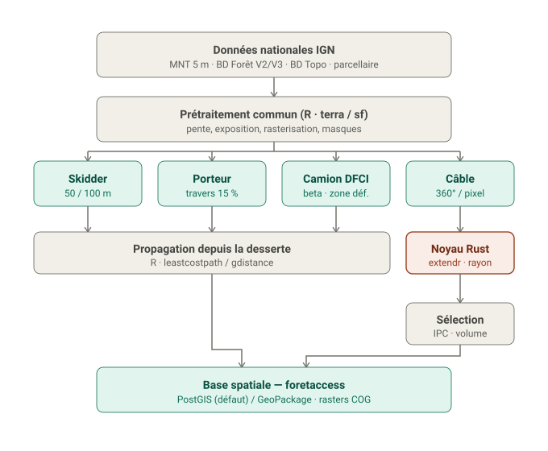

Cartographie automatique de l’accessibilité des forêts selon le mode d’exploitation (skidder, porteur, câble-mât, camion DFCI). Réimplémentation moderne, découplée et testable du modèle Sylvaccess (INRAE — S. Dupire), sous forme de package R avec un noyau câble en Rust (via extendr), et des sorties en base spatiale (PostGIS / GeoPackage).
Architecture cible

Détail des couches, périmètre et décisions : voir le brief projet docs/foretaccess-brief.md.
Statut
Amorçage. Le développement suit un workflow spec-driven / agile par lots (specs/0XX-*.md + ADR + tests de non-régression), piloté via Claude Code. La feuille de route est décrite dans le brief (§10 Lotissement).
Stack
-
R : orchestration, I/O SIG (
terra,sf), prétraitement, plus court chemin (leastcostpath/gdistance), moteurs terrestres, pipeline (targets). -
Rust : noyau câble (mécanique CableHelp), exposé via
extendr/rextendr, parallélismerayon. -
Stockage : PostGIS (défaut,
DBI/RPostgres) ou GeoPackage (sf) derrière une interface commune ; rasters en GeoTIFF/COG (terra).
Cohérent avec l’écosystème Nemeton (R/Shiny/golem, PostGIS) : utilitaires et base spatiale potentiellement partagés.
Licence & attribution
Distribué sous GPL v3 (travail dérivé de Sylvaccess, GPL v3). Merci de citer :
- Dupire S., Bourrier F., Monnet J.-M., Berger F. (2015). Sylvaccess : un modèle pour cartographier automatiquement l’accessibilité des forêts. Revue Forestière Française.
- Dupire S., Bourrier F., Berger F. (2015). Predicting load path and tensile forces during cable yarding operations on steep terrain. Journal of Forest Research, DOI 10.1007/s10310-015-0503-4.
- Sylvaccess : DOI 10.15454/JUBESS.